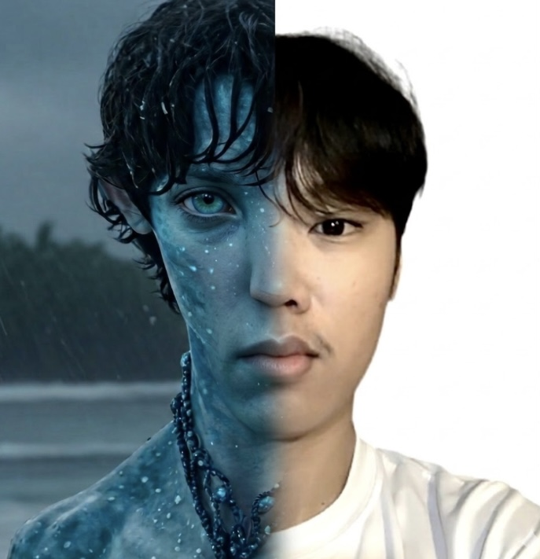

Cervin John R.
Coronacion
ITDD
Menu
Lectures
Prelims
Midterms
Finals
LECTURES
Lecture 1: Intro to Web Design and Components
Lecture 2: HTML Structures
Lecture 3: Tables
Lecture 4: Lists, Links, and Images
Lecture 5: CSS
Lecture 6: Multimedia and Forms
Lecture 7: Bootstrap
PRELIMS
Web Developer's Page
Tables with Images (Favorite Place)
Furniture Sale
MIDTERMS
Lists - Table of Contents
Image and Image Mapping
Menu Page for Restaurant
Informative Page
FINALS
Admission Form
Project Proposal: Bayan-iki